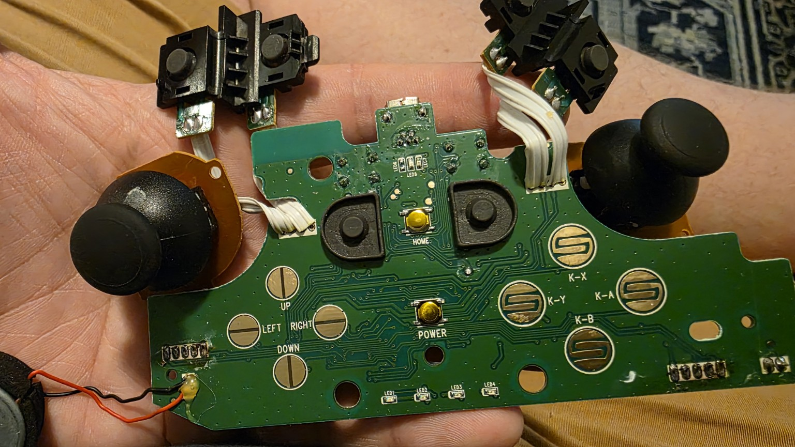

Reference view: photo 3081, button contacts facing you, USB at the top. Original photograph is unscaled; the A marker identifies a hole, not a dimension.
| ID | Reading in mm |
|---|---|
| W | Maximum green main-PCB width. Exclude detached joystick boards and ribbons. |
| H | Maximum green main-PCB height, including its USB tongue but not metal socket overhang. |
| T | Bare substrate thickness at an exposed edge, excluding components and solder. |
| A | Diameter of the marked round through-hole immediately left of the USB tongue. |

AKeep the board unpowered and leave the ribbons intact. W/H/T establish an envelope, not this irregular board's exact contour. We will locate the other holes, outline steps and component heights next.
All ten sanitized photographs